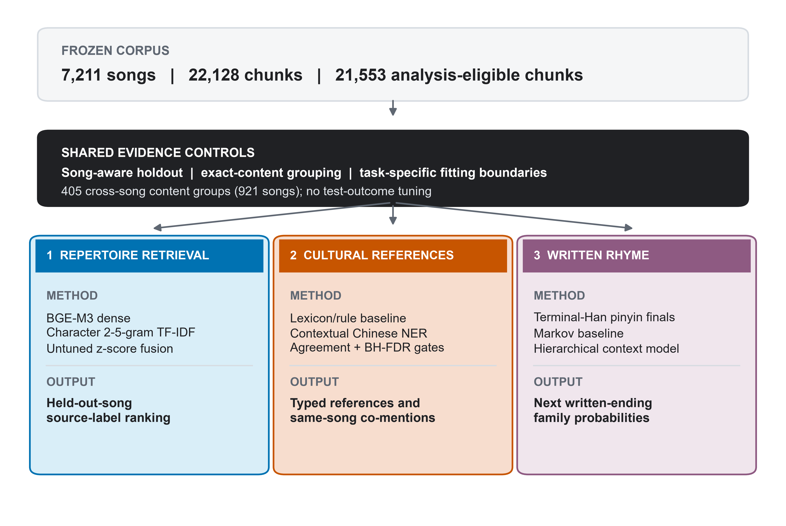

01
How does evidence move through the study?
One frozen corpus feeds three task-specific pipelines with shared leakage controls and different valid claims.

Read it as: corpus → controls → three distinct downstream tasks.
Boundary: the shared input does not make the three tasks interchangeable.